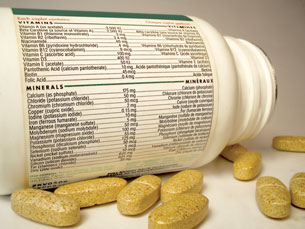

© keellla/shutterstock
Module 1 will examine fundamental science and chemistry concepts.
The essential question that you will look at in this module is this:
What is the importance of developing models, using empirical evidence, and developing theories to explaining and understanding the structure and properties of ionic compounds?

© Graca Victoria/shutterstock
In this module you will learn about chemical compounds and the forces within and between them. You will learn about other types of chemical bonds and the effect they have on the properties of some substances, and how these properties are used to develop technologies that you might be using, but did not know it.
The essential question that you will look at in this module is this: